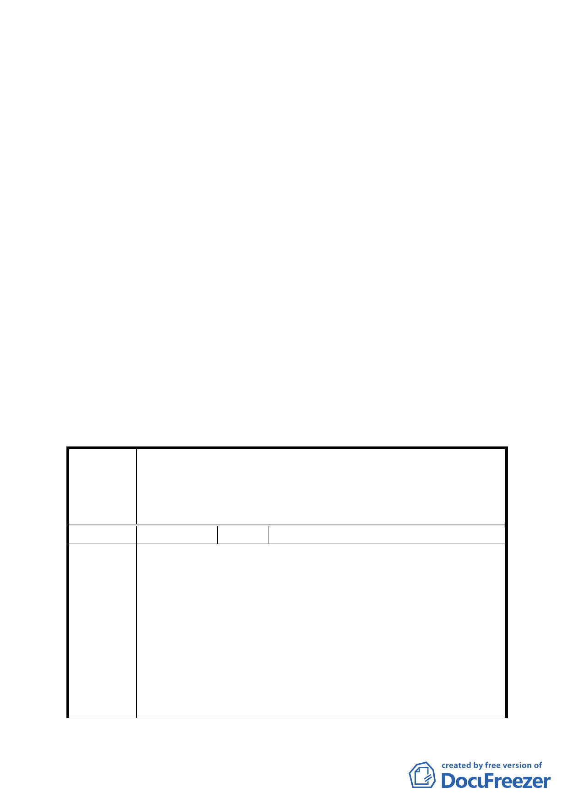

請人應於主要計畫核定前，與臺北市政府簽訂協議書，具結
保證依核定之都市計畫暨其所提整體開發計畫限期實施，納
入都市計畫書規定，並俟細部計畫經臺北市都委會審定後，
再另案檢具變更主要計畫書、圖報由本部逕予核定；如無法
依照辦理者，建議維持原計畫」，本計畫爰依主要計畫規範，
擬定「醫療服務專用區」細部計畫。
決議：
一、本案不予同意，仍請申請單位應依據 93 年 5 月 25 日內政部
都市計畫委員會第 586 次會議審議決議事項，提出本特定專
用區整體開發計畫，及與市府簽訂協議書。
二、為有利計畫作業與案情瞭解，未來再提特定專用區細部計畫
時，請先邀集委員召開討論會尋求共識，並俟取得具體結論
後再提報大會審議。
三、公民或團體所提意見審決如綜理表。
臺北市都市計畫委員會公民或團體所提意見綜理表
擬定「北投士林科技園區主要計畫」之特定專用區內新
案 名 光紡織廠舊址以北、文昌路以西、美崙街以南、以東所
圍地區細部計畫案
編 號 １ 陳情人 士林區福佳里辦公室
1. 依據「北投士林科技園區主要計畫」中，中正路以北、文昌
路以西、美崙街以南、以東所圍地區，為特定專用區，由申
請人新光紡織股份有限公司及財團法人新光吳火獅紀念醫
院，自行擬定細部計畫及開發計畫，為何此次所擬定之都市
陳情理由
計畫書，僅就新光紡織廠舊址以北、文昌路以西、美崙街以
南，以東所圍地區之部分作細部計畫，與主要計畫規範不
同，應予以駁回此計畫案。
2. 土地權屬狀況：依據第 4 頁所載土地權屬分屬財團法人新光
吳火獅紀念醫院，新光資產管理股份有限公司及其他零星地
主所有，惟在計畫書中（附件六），其全部土地清冊中，並
6